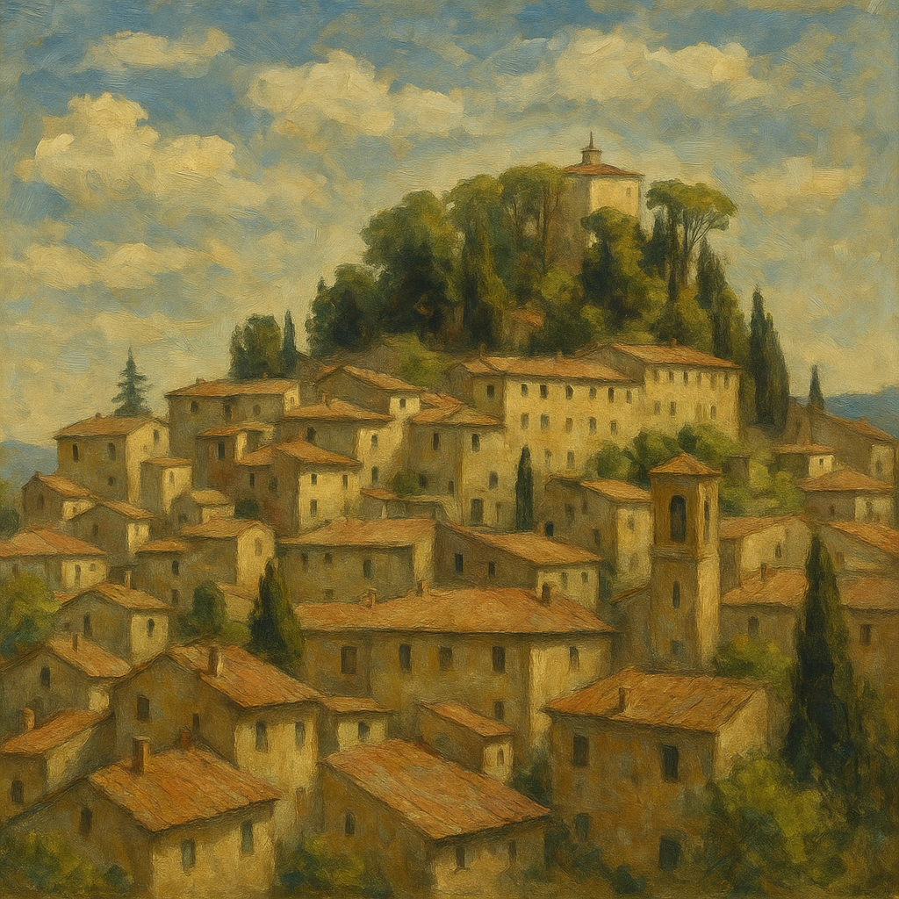

Cetona: At the Origins of Civilization, in the Heart of the Val di Chiana
At the point where the southern end of the Sienese Val di Chiana narrows and the woods grow denser along the slopes of the mountain that gives it its name, Cetona reveals itself as one of the most fascinating and ancient villages in Tuscany. A place where time has left its mark with reverence, without erasing anything—layering millennia of human presence in an unspoiled and deeply evocative landscape.
A Land Inhabited Since Prehistoric Times
Cetona is renowned as one of the most important prehistoric sites in Italy. The Belverde caves, inhabited since the Paleolithic era, tell ancient stories—rituals, daily life, burials, flint tools, and pottery. Today, these places can be visited within the Monte Cetona Archaeological and Natural Park, while the Civic Museum for the Prehistory of Monte Cetona, housed in the Town Hall, preserves the most significant artifacts of this long human history.
From the Ancient World to the Middle Ages

The territory of Cetona was also inhabited during the Etruscan and Roman periods, as evidenced by tombs, road segments, and remains of rural villas. However, it was in the Middle Ages that the village took on its current form: the Rocca, dating back at least to the 11th century, still dominates the historic center today, which unfolds in concentric circles around it, with stone streets, travertine houses, and views that seem to come straight out of a fresco.
Over the centuries, Cetona was contested by various lords and cities, until it eventually became part of the Sienese, and later Medicean, sphere of influence. In the 16th century, it became an important rural and spiritual center, as evidenced by the many convents and churches.
Nature, Spirituality, and Landscape
Monte Cetona, rising over 1100 meters, is much more than a natural elevation: it is a place of spirituality, pathways, and silence. Its trails cross ancient woods, hidden hermitages, and old places of worship. From the mountain, one can admire one of the widest panoramas in central Tuscany, stretching from the Val d’Orcia to Lake Trasimeno, from the Val di Chiana to Mount Amiata.
The countryside surrounding the village is cultivated with vineyards, olive groves, and cereals, featuring historic farms and stone farmhouses, in a perfect balance between agriculture and landscape.
Village Life and Living Traditions
Despite its long history, Cetona is a vibrant village that preserves traditional festivals, a strong cultural identity, and a quality of life that attracts visitors and new residents. Piazza Garibaldi, the heart of the village, is a gathering place for locals and tourists alike, with its outdoor cafés, artisan markets, and summer evenings full of life.
The village is part of the "Most Beautiful Villages in Italy" network, a recognition that reflects the harmony between historical heritage, architectural preservation, and quality of life.
Hamlets and Localities
- Piazze – about 704 inhabitants (official hamlet)
- Camporsevoli – historic locality
- Patarnione – rural locality; about 27 inhabitants
- Poggio alla Vecchia – rural locality; 4 inhabitants
- Vecciano – rural locality
Currently, Piazze is the only officially recognized hamlet of the municipality of Cetona. The others are considered rural localities or smaller inhabited settlements. For updated data, sources such as ISTAT or the Municipal Office can be consulted.